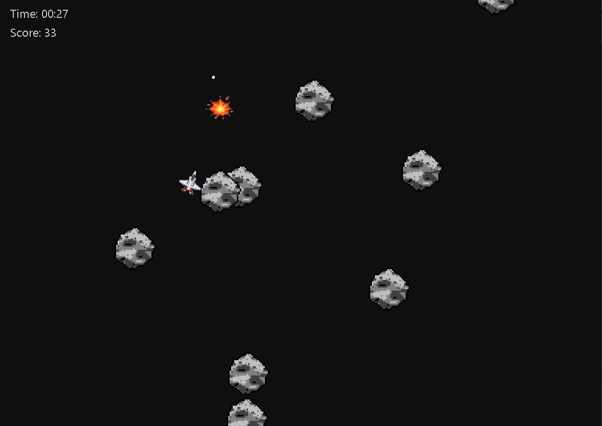
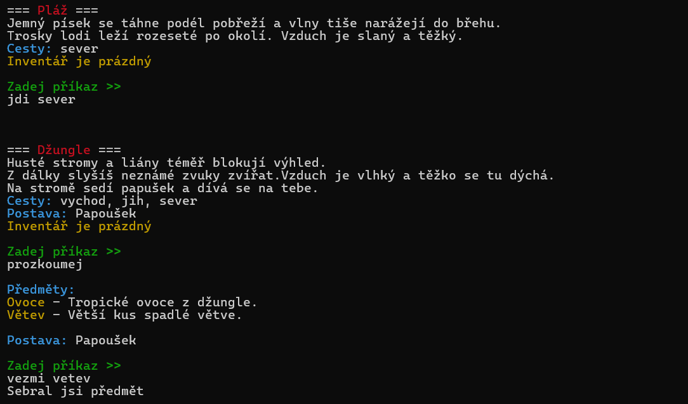
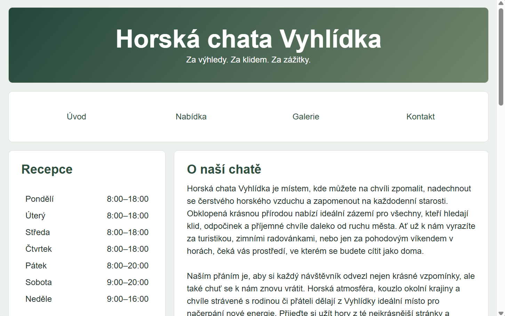

Mikro Omega

Jednoduchá 2D hra napsaná v jazyce Java. Hráč v ní ovládá vesmírnou loď a snaží se přežít co nejdéle ničením a vyhýbáním se okolních asteroidů.
Student informačních technologií
Jsem student střední školy se zájmem o informační technologie. Rád se učím novým věcem a pracuji na projektech. Ve volném čase se věnuji svým přátelům a koníčkům.

Jednoduchá 2D hra napsaná v jazyce Java. Hráč v ní ovládá vesmírnou loď a snaží se přežít co nejdéle ničením a vyhýbáním se okolních asteroidů.

Jednoduchá textová hra napsaná v jazyce Java, která běží v terminálu. Hráč je trosečník na opuštěném ostrově a snaží se opravit vysílačku, aby si zavolal pomoc.

Responzivní webová stránka fiktivní horské chaty.
| Dovednost | Úroveň |
|---|---|
| Webdesign | Střední |
| Java | Pokročilý |
| C# | Pokročilý |
| Python | Střední |
| Linux | Střední |
| SQL | Začátečník |
GitHub: Můj profil na GitHubu